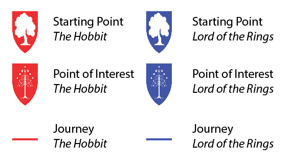

THE THIRD AGE
×
Close
The Third Age
- One Ring Paths
Use the two sliders in the lower-right to progress through the ring's paths. Click on a pin to open its popup, with information about the ring's journey through the locale.
